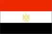
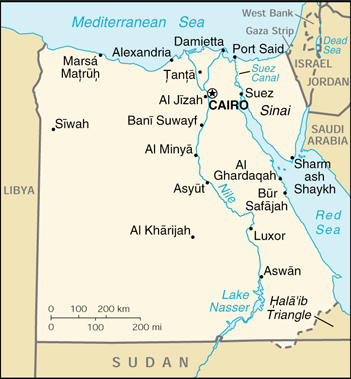

{kind=link}


| Egypt |  |
|
|
 | |
| Introduction |
Background: Nominally independent from the UK in 1922, Egypt acquired full sovereignty following World War II. The completion of the Aswan High Dam in 1971 and the resultant Lake Nasser have altered the time-honored place of the Nile River in the agriculture and ecology of Egypt. A rapidly growing population (the largest in the Arab world) will continue to stress Egyptian society and overtax resources as the country enters the new millennium.
| Geography |
Location: Northern Africa, bordering the Mediterranean Sea, between Libya and the Gaza Strip
Geographic coordinates: 27 00 N, 30 00 E
Map references: Africa
Area:
total:
1,001,450 sq km
land:
995,450 sq km
water:
6,000 sq km
Area - comparative: slightly more than three times the size of New Mexico
Land boundaries:
total:
2,689 km
border countries:
Gaza Strip 11 km, Israel 255 km, Libya 1,150 km, Sudan 1,273 km
Coastline: 2,450 km
Maritime claims:
contiguous zone:
24 nm
continental shelf:
200-m depth or to the depth of exploitation
exclusive economic zone:
200 nm
territorial sea:
12 nm
Climate: desert; hot, dry summers with moderate winters
Terrain: vast desert plateau interrupted by Nile valley and delta
Elevation extremes:
lowest point:
Qattara Depression -133 m
highest point:
Mount Catherine 2,629 m
Natural resources: petroleum, natural gas, iron ore, phosphates, manganese, limestone, gypsum, talc, asbestos, lead, zinc
Land use:
arable land:
2%
permanent crops:
0%
permanent pastures:
0%
forests and woodland:
0%
other:
98% (1993 est.)
Irrigated land: 32,460 sq km (1993 est.)
Natural hazards: periodic droughts; frequent earthquakes, flash floods, landslides, volcanic activity; hot, driving windstorm called khamsin occurs in spring; dust storms, sandstorms
Environment - current issues: agricultural land being lost to urbanization and windblown sands; increasing soil salination below Aswan High Dam; desertification; oil pollution threatening coral reefs, beaches, and marine habitats; other water pollution from agricultural pesticides, raw sewage, and industrial effluents; very limited natural fresh water resources away from the Nile which is the only perennial water source; rapid growth in population overstraining natural resources
Environment - international agreements:
party to:
Biodiversity, Climate Change, Desertification, Endangered Species, Environmental Modification, Hazardous Wastes, Law of the Sea, Marine Dumping, Nuclear Test Ban, Ozone Layer Protection, Ship Pollution, Tropical Timber 83, Tropical Timber 94, Wetlands, Whaling
signed, but not ratified:
Climate Change-Kyoto Protocol
Geography - note: controls Sinai Peninsula, only land bridge between Africa and remainder of Eastern Hemisphere; controls Suez Canal, shortest sea link between Indian Ocean and Mediterranean Sea; size, and juxtaposition to Israel, establish its major role in Middle Eastern geopolitics
| People |
Population: 68,359,979 (July 2000 est.)
Age structure:
0-14 years:
35% (male 12,260,343; female 11,701,253)
15-64 years:
61% (male 21,111,615; female 20,714,511)
65 years and over:
4% (male 1,131,760; female 1,440,497) (2000 est.)
Population growth rate: 1.72% (2000 est.)
Birth rate: 25.38 births/1,000 population (2000 est.)
Death rate: 7.83 deaths/1,000 population (2000 est.)
Net migration rate: -0.35 migrant(s)/1,000 population (2000 est.)
Sex ratio:
at birth:
1.05 male(s)/female
under 15 years:
1.05 male(s)/female
15-64 years:
1.02 male(s)/female
65 years and over:
0.79 male(s)/female
total population:
1.02 male(s)/female (2000 est.)
Infant mortality rate: 62.32 deaths/1,000 live births (2000 est.)
Life expectancy at birth:
total population:
63.33 years
male:
61.29 years
female:
65.47 years (2000 est.)
Total fertility rate: 3.15 children born/woman (2000 est.)
Nationality:
noun:
Egyptian(s)
adjective:
Egyptian
Ethnic groups: Eastern Hamitic stock (Egyptians, Bedouins, and Berbers) 99%, Greek, Nubian, Armenian, other European (primarily Italian and French) 1%
Religions: Muslim (mostly Sunni) 94%, Coptic Christian and other 6%
Languages: Arabic (official), English and French widely understood by educated classes
Literacy:
definition:
age 15 and over can read and write
total population:
51.4%
male:
63.6%
female:
38.8% (1995 est.)
| Government |
Country name:
conventional long form:
Arab Republic of Egypt
conventional short form:
Egypt
local long form:
Jumhuriyat Misr al-Arabiyah
local short form:
Misr
former:
United Arab Republic (with Syria)
Data code: EG
Government type: republic
Capital: Cairo
Administrative divisions: 26 governorates (muhafazat, singular - muhafazah); Ad Daqahliyah, Al Bahr al Ahmar, Al Buhayrah, Al Fayyum, Al Gharbiyah, Al Iskandariyah, Al Isma'iliyah, Al Jizah, Al Minufiyah, Al Minya, Al Qahirah, Al Qalyubiyah, Al Wadi al Jadid, Ash Sharqiyah, As Suways, Aswan, Asyut, Bani Suwayf, Bur Sa'id, Dumyat, Janub Sina', Kafr ash Shaykh, Matruh, Qina, Shamal Sina', Suhaj
Independence: 28 February 1922 (from UK)
National holiday: Anniversary of the Revolution, 23 July (1952)
Constitution: 11 September 1971
Legal system: based on English common law, Islamic law, and Napoleonic codes; judicial review by Supreme Court and Council of State (oversees validity of administrative decisions); accepts compulsory ICJ jurisdiction, with reservations
Suffrage: 18 years of age; universal and compulsory
Executive branch:
chief of state:
President Mohammed Hosni MUBARAK (since 14 October 1981)
head of government:
Prime Minister Atef OBEID (since 5 October 1999)
cabinet:
Cabinet appointed by the president
elections:
president nominated by the People's Assembly for a six-year term, the nomination must then be validated by a national, popular referendum; national referendum last held 26 September 1999 (next to be held NA October 2005); prime minister appointed by the president
election results:
national referendum validated President MUBARAK's nomination by the People's Assembly to a fourth term
Legislative branch:
bicameral system consists of the People's Assembly or Majlis al-Sha'b (454 seats; 444 elected by popular vote, 10 appointed by the president; members serve five-year terms) and the Advisory Council or Majlis al-Shura - which functions only in a consultative role (264 seats; 176 elected by popular vote, 88 appointed by the president; members serve NA-year terms)
elections:
People's Assembly - last held 29 November 1995 (next to be held NA November 2000); Advisory Council - last held 7 June 1995 (next to be held NA)
election results:
People's Assembly - percent of vote by party - NDP 72%, independents 25%, opposition 3%; seats by party - NDP 317, independents 114, NWP 6, NPUG 5, Nasserist Arab Democratic Party 1, LSP 1; Advisory Council - percent of vote by party - NDP 99%, independents 1%; seats by party - NA
Judicial branch: Supreme Constitutional Court
Political parties and leaders:
Democratic Unionist Party [Mohammed 'Abd-al-Mun'im TURK]; Green Party [Kamal KIRAH]; Misr al-Fatah Party (Young Egypt Party) [leader NA]; Nasserist Arab Democratic Party [Dia' al-din DAWUD]; National Democratic Party or NDP [President Mohammed Hosni MUBARAK, leader] - governing party; National Progressive Unionist Grouping or NPUG [Khalid MUHI AL-DIN]; New Wafd Party or NWP [Fu'ad SIRAJ AL-DIN]; Social Justice Party [Muhammad 'ABDAL-'AL]; Socialist Labor Party or SLP [Ibrahim SHUKRI]; Socialist Liberal Party or LSP [Mustafa Kamal MURAD]; Umma Party [Ahmad al-SABAHI]
note:
formation of political parties must be approved by government
Political pressure groups and leaders: despite a constitutional ban against religious-based parties, the technically illegal Muslim Brotherhood constitutes MUBARAK's potentially most significant political opposition; MUBARAK tolerated limited political activity by the Brotherhood for his first two terms, but has moved more aggressively in the past six years to block its influence; trade unions and professional associations are officially sanctioned
International organization participation: ABEDA, ACC, ACCT (associate), AfDB, AFESD, AL, AMF, BSEC (observer), CAEU, CCC, EBRD, ECA, ESCWA, FAO, G-15, G-19, G-24, G-77, IAEA, IBRD, ICAO, ICC, ICRM, IDA, IDB, IFAD, IFC, IFRCS, IHO, ILO, IMF, IMO, Inmarsat, Intelsat, Interpol, IOC, IOM, ISO, ITU, MINURSO, MONUC, NAM, OAPEC, OAS (observer), OAU, OIC, OSCE (partner), PCA, UN, UNAMSIL, UNCTAD, UNESCO, UNIDO, UNITAR, UNMIBH, UNMIK, UNMOP, UNOMIG, UNRWA, UNTAET, UPU, WFTU, WHO, WIPO, WMO, WToO, WTrO
Diplomatic representation in the US:
chief of mission:
Ambassador Nabil FAHMY
chancery:
3521 International Court NW, Washington, DC 20008
telephone:
[1] (202) 895-5400
FAX:
[1] (202) 244-4319, 5131
consulate(s) general:
Chicago, Houston, New York, and San Francisco
Diplomatic representation from the US:
chief of mission:
Ambassador Daniel C. KURTZER
embassy:
(North Gate) 8, Kamel El-Din Salah Street, Garden City, Cairo
mailing address:
Unit 64900, APO AE 09839-4900
telephone:
[20] (2) 3557371
FAX:
[20] (2) 3573200
Flag description: three equal horizontal bands of red (top), white, and black with the national emblem (a shield superimposed on a golden eagle facing the hoist side above a scroll bearing the name of the country in Arabic) centered in the white band; similar to the flag of Yemen, which has a plain white band; also similar to the flag of Syria, which has two green stars, and to the flag of Iraq, which has three green stars (plus an Arabic inscription) in a horizontal line centered in the white band
| Economy |
Economy - overview: A series of IMF arrangements - coupled with massive external debt relief resulting from Egypt's participation in the Gulf war coalition - helped Egypt improve its macroeconomic performance during the 1990s. Through sound fiscal and monetary policies, Cairo tamed inflation, slashed budget deficits, and built up foreign reserves. Although the pace of structural reforms - such as privatization and new business legislation - has been slower than the IMF envisioned, Egypt's steps toward a more market-oriented economy have prompted increased foreign investment. Lower combined hard currency inflows - from tourism, worker remittances, oil revenues, and Suez Canal tolls - in 1998 and the first half of 1999 resulted in pressure on the Egyptian pound and sporadic dollar shortages, but external payments were not in crisis. Despite ample reserves, the Central Bank did not provide sufficient hard currency to commercial banks and Cairo restricted imports for a short period; these developments confirmed to some investors and currency traders that government financial operations lack sufficient coordination and openness. Monetary pressures have since eased, however, with the continued oil price recovery starting in mid-1999 and a moderate rebound in tourism. Increased gas exports are a major plus factor in future growth.
GDP: purchasing power parity - $200 billion (1999 est.)
GDP - real growth rate: 5% (1999 est.)
GDP - per capita: purchasing power parity - $3,000 (1999 est.)
GDP - composition by sector:
agriculture:
17%
industry:
32%
services:
51% (1999)
Population below poverty line: NA%
Household income or consumption by percentage share:
lowest 10%:
3.9%
highest 10%:
26.7% (1991)
Inflation rate (consumer prices): 3.7% (1999)
Labor force: 19 million (1999 est.)
Labor force - by occupation: agriculture 40%, services 38%, industry 22% (1990 est.)
Unemployment rate: 11.8% (1999 est.)
Budget:
revenues:
$20.7 billion
expenditures:
$22.3 billion, including capital expenditures of $NA (FY98/99)
Industries: textiles, food processing, tourism, chemicals, petroleum, construction, cement, metals
Industrial production growth rate: 5% (1999 est.)
Electricity - production: 57.8 billion kWh (1998)
Electricity - production by source:
fossil fuel:
78.72%
hydro:
21.28%
nuclear:
0%
other:
0% (1998)
Electricity - consumption: 53.754 billion kWh (1998)
Electricity - exports: 0 kWh (1998)
Electricity - imports: 0 kWh (1998)
Agriculture - products: cotton, rice, corn, wheat, beans, fruits, vegetables; cattle, water buffalo, sheep, goats; fish
Exports: $4.6 billion (f.o.b., 1999 est.)
Exports - commodities: crude oil and petroleum products, cotton, textiles, metal products, chemicals
Exports - partners: EU 47%, US 14%, Turkey 8% (1998)
Imports: $15.8 billion (f.o.b., 1999 est.)
Imports - commodities: machinery and equipment, foodstuffs, chemicals, wood products, fuels
Imports - partners: EU 42%, US 16%, Japan 5% (1998)
Debt - external: $30 billion (1999 est.)
Economic aid - recipient: ODA, $2.25 billion (1999)
Currency: 1 Egyptian pound = 100 piasters
Exchange rates: Egyptian pounds per US$1 - market rate - 3.4050 (January 2000), 3.4050 (1999), 3.3880 (1998), 3.3880 (1997), 3.3880 (1996), 3.3900 (1995)
Fiscal year: 1 July - 30 June
| Communications |
Telephones - main lines in use: 3.168 million (1996)
Telephones - mobile cellular: 380,000 (1999)
Telephone system:
large system by Third World standards but inadequate for present requirements and undergoing extensive upgrading; Internet access available
domestic:
principal centers at Alexandria, Cairo, Al Mansurah, Ismailia, Suez, and Tanta are connected by coaxial cable and microwave radio relay
international:
satellite earth stations - 2 Intelsat (Atlantic Ocean and Indian Ocean), 1 Arabsat, and 1 Inmarsat; 5 coaxial submarine cables; tropospheric scatter to Sudan; microwave radio relay to Israel; a participant in Medarabtel and a signatory to Project Oxygen (a global submarine fiber-optic cable system)
Radio broadcast stations: AM 42 (plus 15 repeater stations), FM 14, shortwave 3 (1999)
Radios: 20.5 million (1997)
Television broadcast stations: 51 (September 1995)
Televisions: 7.7 million (1997)
Internet Service Providers (ISPs): 31 (1999)
| Transportation |
Railways:
total:
4,955 km
standard gauge:
4,955 km 1,435-m gauge (42 km electrified; 1,560 km double track)
Highways:
total:
64,000 km
paved:
49,984 km
unpaved:
14,016 km (1996 est.)
Waterways: 3,500 km (including the Nile, Lake Nasser, Alexandria-Cairo Waterway, and numerous smaller canals in the delta); Suez Canal, 193.5 km (including approaches), used by oceangoing vessels drawing up to 16.1 m of water
Pipelines: crude oil 1,171 km; petroleum products 596 km; natural gas 460 km
Ports and harbors: Alexandria, Al Ghardaqah, Aswan, Asyut, Bur Safajah, Damietta, Marsa Matruh, Port Said, Suez
Merchant marine:
total:
180 ships (1,000 GRT or over) totaling 1,348,148 GRT/2,014,483 DWT
ships by type:
bulk 25, cargo 63, container 1, liquified gas 1, passenger 57, petroleum tanker 14, roll-on/roll-off 16, short-sea passenger 3 (1999 est.)
Airports: 90 (1999 est.)
Airports - with paved runways:
total:
71
over 3,047 m:
12
2,438 to 3,047 m:
36
1,524 to 2,437 m:
16
914 to 1,523 m:
3
under 914 m:
4 (1999 est.)
Airports - with unpaved runways:
total:
19
2,438 to 3,047 m:
2
1,524 to 2,437 m:
2
914 to 1,523 m:
6
under 914 m:
9 (1999 est.)
Heliports: 2 (1999 est.)
| Military |
Military branches: Army, Navy, Air Force, Air Defense Command
Military manpower - military age: 20 years of age
Military manpower - availability:
males age 15-49:
18,164,353 (2000 est.)
Military manpower - fit for military service:
males age 15-49:
11,766,949 (2000 est.)
Military manpower - reaching military age annually:
males:
704,373 (2000 est.)
Military expenditures - dollar figure: $3.28 billion (FY95/96)
Military expenditures - percent of GDP: 8.2% (FY95/96)
| Transnational Issues |
Disputes - international: Egypt asserts its claim to the "Hala'ib Triangle," a barren area of 20,580 sq km under partial Sudanese administration that is defined by an administrative boundary which supersedes the treaty boundary of 1899
Illicit drugs: a transit point for Southwest Asian and Southeast Asian heroin and opium moving to Europe, Africa, and the US; popular transit stop for Nigerian couriers